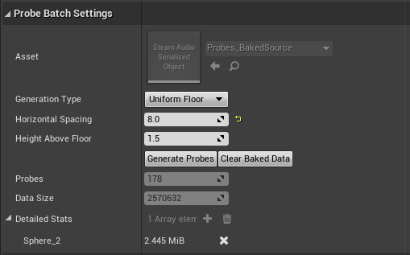

Steam Audio Probe Volume¶
A volume in which sound probes can be generated. When baking reflections, reverb, or pathing, baked data is stored in one or more probe volumes.
Each probe volume contains one or more probes within its volume. You can control the size and shape of this volume using Unreal’s translate, rotate, and scale tools, just like any other volume actor.
- Asset
Reference to the asset that contains the exported baked data for this probe volume. Automatically generated by Steam Audio.
- Generation Type
Specifies how probes should be generated and placed within this volume.
Centroid. Places a single probe at the center of the volume.
Uniform Floor. Places probes at a specified height above the floor with a specified horizontal spacing between probes. The “floor” is defined as any geometry that would intersect rays cast within the volume and parallel to the -y axis in the local coordinate system of the probe volume.
- Horizontal Spacing
The horizontal distance (in meters) between adjacent probes. Only used if Generation Type is Uniform Floor.
- Height Above Floor
The height (in meters) above the floor at which probes should be placed. Only used if Generation Type is Uniform Floor.
- Generate Probes
Generates probes within the volume.
- Clear Baked Data
Deletes all baked data stored within the probe volume.
- Bake Pathing
Starts baking pathing data for this probe volume.
- Detailed Statistics
Shows the size (in bytes) of various baked data stored in this probe volume. Click the “x” button in a given row to remove the corresponding data from the probe volume.